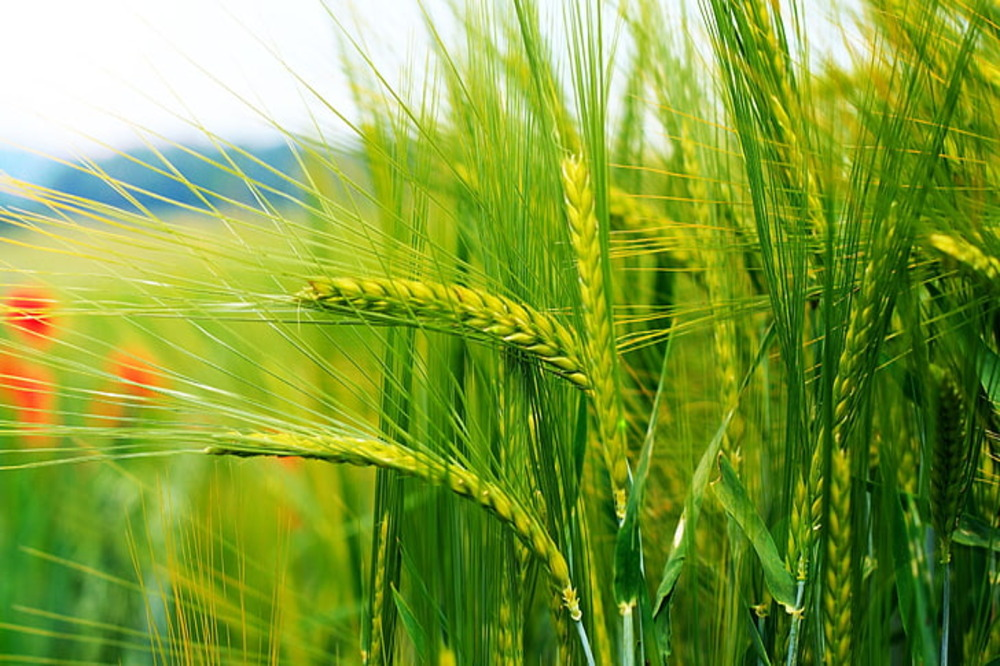
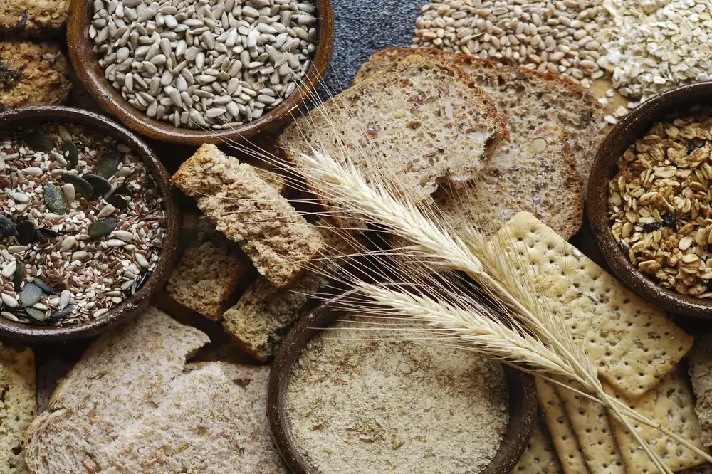

Wheat

Wheat is one of the most important staple foods, providing a significant portion of the daily calorie intake for millions of people.Wheat is a rich source of nutrients, including complex carbohydrates, protein, fiber, vitamins, and minerals. It is also low in fat and cholesterol, making it a healthy dietary choice. In addition, wheat is used in non-food products, such as paper, adhesives, and cosmetics.
Cost of Planting Wheat
Despite the expenses associated with planting wheat, it can be a profitable crop for farmers. The price of wheat can fluctuate depending on supply and demand, and farmers who are able to produce high-quality wheat can often command premium prices for their crop. Additionally, advances in technology and farming practices can help farmers to reduce their costs and increase their yields.
Return after selling Wheat
It can be a profitable crop for farmers who are able to produce high-quality wheat efficiently and at a low cost. By staying up-to-date on market trends and utilizing modern farming practices, farmers can maximize their profits and help to ensure the long-term sustainability of their farming operation.